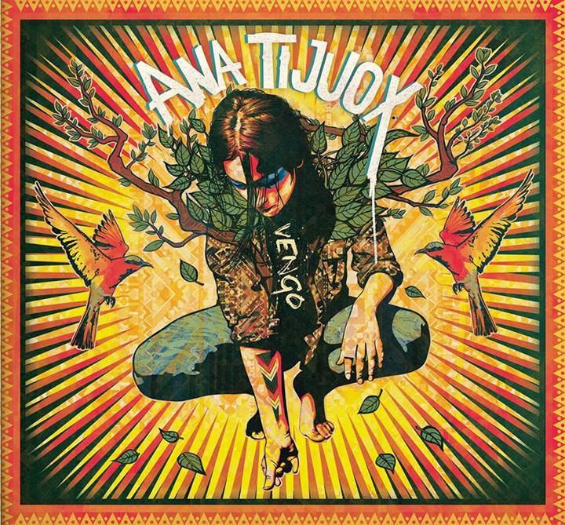
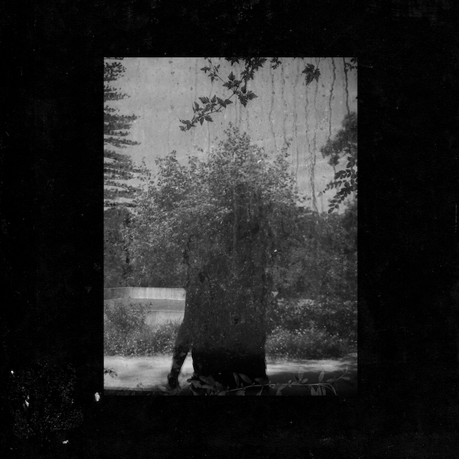
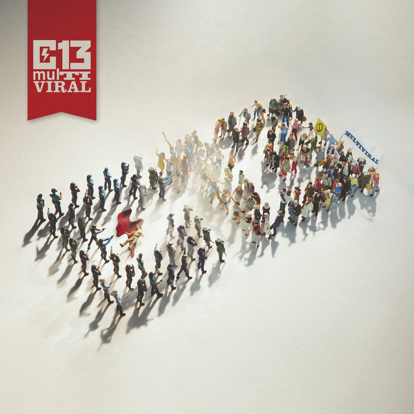
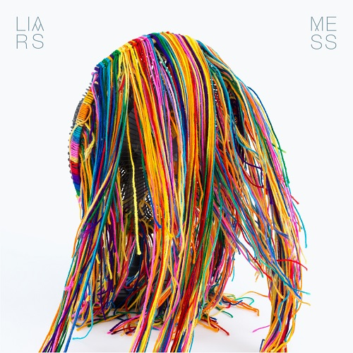
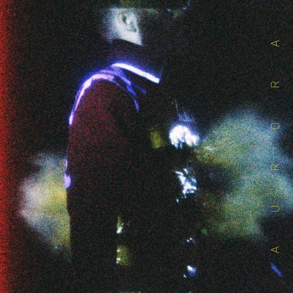

{kind=link}
Estábamos deseosos de arrancar ya con el nuevo diseño y el tradicional repaso a lo mejor que ha dado el año. Esta vez hemos optado por un formato de selección comunal, conformado por los discos favoritos de 2014 de todo el staff de SuicideByStar. En una primera entrega os presentamos de los puestos del 30 al 11 del top, en una segunda los 10 primeros puestos de honor, y aparte tendremos una tercera entrega donde miraremos más con lupa los trabajos nacionales.
—
30. Imminencce – I
{kind=link}
—
29. Graveyard Train – Takes One To Know One
 | Lo mas increíble de este disco es como en solo 20 minutos hay compactado un mundo enorme, como cada canción se expande y te transporta a una historia que contiene tanto en tan poco. Salvo en un par de momentos de intensidad blues, el disco se mueve en terrenos de folk oscuro y profundo, donde los lamentos del banjo y los coros graves nos traen a la mente imágenes de un pueblo fantasma en medio del desierto australiano. |
—
28. Lasher Keen – Mantic Poetry, Oracular Prophecy
 | Y aquí es donde aquellos que aún creen en el placer de contar una historia con música y conmover a las almas más impávidas con los trinos de la voz se dan la mano. Bienvenidos a un remanso de paz con ecos de un mundo del medievo que nunca terminó de irse. |
—
27. Yob – Clearing The Path To Ascend
 | Si el año pasado fue Sunbather el disco de metal que más se coló en tops ajenos al género, este año no cabe duda que es el último disco de Yob, una banda muy experimentada pero que ha explotado este año. Para ello «sólo» han necesitado aunar ingredientes que suelen ir bien juntos (doom, sludge y post-metal) pero con un toque heavy clásico y unas composiciones largas e inspiradas. |
—
26. Lust For Youth – International
 | Proveniente de Suecia pero con base en la fértil escena danesa (de la que un día debemos de hablar largo y tendido), el proyecto de Hannes Norrvide se descolgó con el que ha sido para nosotros un improbable disco del verano sacudiendo su poso industrial y entregándose a un synth-pop que conjuga la bailabilidad con una interesante dósis de post-punk y de la típica desmaña social escandinava. Si esto no os convence, sólo escuchad el temazo que es New Boys, nosotros no tenemos nada más que añadir. |
—
25. Cro – Melodie
{kind=link}
—
24. Ana Tijoux – Vengo
|  | Ana Tijoux continua la elegante senda que inició con 1977 y lleva su anterior La Bala a un nivel más allá. Producciones orgánicas, músicas tradicionales e instrumentaciones indígenas que no se entienden sin unos rapeos de cargados de feminismo y anticolonialismo, entre otras defensas sociales. A destacar la totalmente adictiva Somos Sur, con la colaboración de Shadia Mansour. |
{kind=link}
—
23. Bölzer – Soma
 | Aunque este dúo suizo aún no ha aterrizado su primer larga duración, no les ha hecho falta más que dos EPs para grabar su nombre a fuego en el imaginario blackmetalero con una de las propuestas más desbocadamente originales que ha visto el género en años. Este Soma no es nada sino un paso más hacia la gloria a la que Bölzer no dejan de apuntar. Leer reseña |
—
22. Grouper – Ruins
|  | Mira que la fórmula de Grouper parece sencilla, pero supongo que ahí esta la clave,. La preciosa y etérea voz de Liz Harris bajo un manto de drone muy muy suave y acompañado de un piano en este ocasión forman un tejido de ambient/clásica que paradójicamente consigue un efecto intenso con su aparente ritmo desganado. |
{kind=link}
—
21. Wovenhand – Refractory Obdurate
 | David Eugene Edwards sigue resistente como una roca predicando la palabra del Señor, y utilizando como vehículo para ello la música. En esta ocasión, su décimo disco, nos ofrece uno de sus trabajos más potentes y rockeros, aunque manteniendo ese eterno poso del folk tradicional de las praderas y la herencia de los nativos americanos. Leer reseña |
—
20. Scott Walker + Sunn O))) – Soused
 | Dentro de nuestro top se ha colado una de las colaboraciones más curiosas que nos ha dejado este 2014: la de Scott Walker (cantante de pop sesentero reconvertido a autor de música experimental pocha) y Sunn O))) (caras más visibles del drone, siempre bordeando entre la genialidad y la autoparodia). El resultado es un disco oscuro de atmósferas enfermas más deudor del sonido de Scott, pero con las características texturas de Sunn O))), que firman una de sus mejores colaboraciones. Leer reseña |
—
19. Cloud Nothings – Here And Nowhere Else
 | Si parecía que los Dylan Baldi habían tocado techo en 2012 con Attack On Memory, en 2014 nos ha quedado claro que estos chicos tienen todavía muchos temazos que darnos. Here and Nowhere Else es su disco más rabioso y acelerado, pero se mantiene lo pegadizo de sus temas confirmando que la insulsa luminosidad de sus primeros trabajos es una cosa del pasado. Leer reseña |
—
18. Current 93 – I Am The Last Of The Field That Fell
 | Con un sonido nocturno y delicado, David Tibet nos recuerda la fuerza de su lírica y de su piano en unos tiempos en los que uno a veces ni sabe qué escuchar. Él es en sí un género y un camino, camino el cuál circula acompañado de poderosísimos amigos músicos como podréis comprobar aquí. No hay palabras para remarcaros la importancia de este disco en el devenir musical actual. |
—
17. Calle 13 – Multiviral
|  | Calle 13 llevaban una progresión en la que cada vez había menos hueco en sus canciones para el humor, dejando hueco a más temáticas comprometidas. Un cambio que ha ido unido a una apertura estilística en cuanto a las bases, donde Residente puede moverse como pez en el agua. Multiviral es un punto de inflexión en este aspecto, una culminación en la que encontramos las mejores producciones de la banda. |
{kind=link}
—
16. Islander – Violence & Destruction
 | ¿Se puede seguir haciendo buen metal alternativo a estas alturas? Islander no inventan nada nuevo, y es imposible no ver muchas de sus influencias (Deftones, etc.) pero cualquiera que disfrutase de este estilo a finales de los 90′ o principios de la decada pasada, lo hará sin duda con Violence & Destruction. |
—
15. Ştiu Nu Ştiu – Ultra Silvam
 | El disco debut de estos suecos ha dejado con el culo torcido a más de uno por aquí. Post punk rápido y épico, shoegaze postrockero psicodélico y momentos agresivos rozando el sludge y el noise. Estos cambios de registro entre los temas y la llamativa voz de su cantante son las bazas de este trabajo heterogéneo en sus influencias y compacto en el resultado final. |
—
14. Liars – Mess
|  | Creo que pocos esperaban que el “disco fiesta” de este 2014 lo fuese a firmar Liars. MESS supone la enésima deriva estilística de la banda, que en este disco ha decidido homenajear diversos estilos electrónicos de los 80s y 90s. Un disco heterogéneo que funciona maravillosamente bien entre el pastilleo, el dance, el industrial y otros tantos dispares géneros. Jolocho ya lo definió muy bien en su sui generis reseña. Leer reseña |
{kind=link}
—
13. Flying Lotus – You’re Dead!
 | Que el jazz más acelerado y ácido y la electrónica más descompasada casan bien no es una cosa que nos haya descubierto Flying Lotus. Que ha sabido producir uno de los discos de electrónica más ricos del año parece que es vox populi. Si además le añadimos las colaboraciones de varios de los artistas del hip hop más punteros, todas las dudas se disipan. Estamos ante uno de los discos del año, ya lo dijo Rememorama. Leer reseña |
2–
12. Blueneck – King Nine
 | Con un nuevo avance en su evolución sonora —ahora con un enfoque más desnudo y atmosférico, más trip hop si me lo permitís—, pero manteniendo esa extrema sensibilidad en la que todo permanece a flor de piel, los británicos, guiados por la elegante voz de Duncan Attwood se han marcado otro disco sobresaliente capaz de derretir a los corazones más gélidos. Leer reseña. |
—
11. Ben Frost – A U R O R A
|  | No es que no me gustase los anteriores discos de Ben Frost, pero siempre he pensado que lo mejor que hacía era lo puramente electrónico y que su gusto por el neoclasicismo estorbaba más que otra cosa. Con A U R O R A Ben Frost se marca el disco que muchos esperábamos de él, con unas atmósferas que aguantan el envite del magnífico trabajo que hace con los graves y entre las que emergen algunos de los mejores singles electrónicos de este 2014 (Nolan y Venter). |
{kind=link}
—
Apoyános